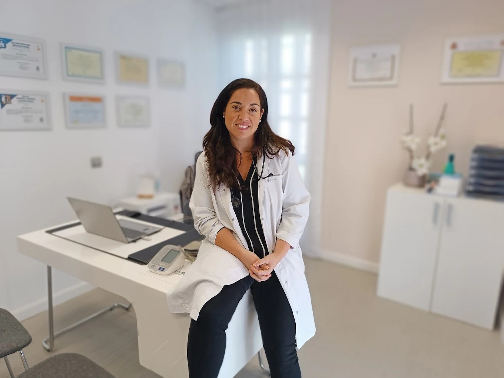
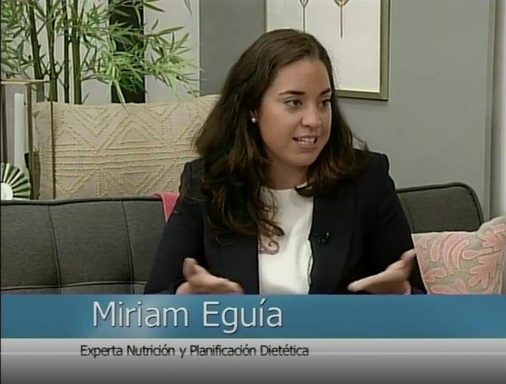
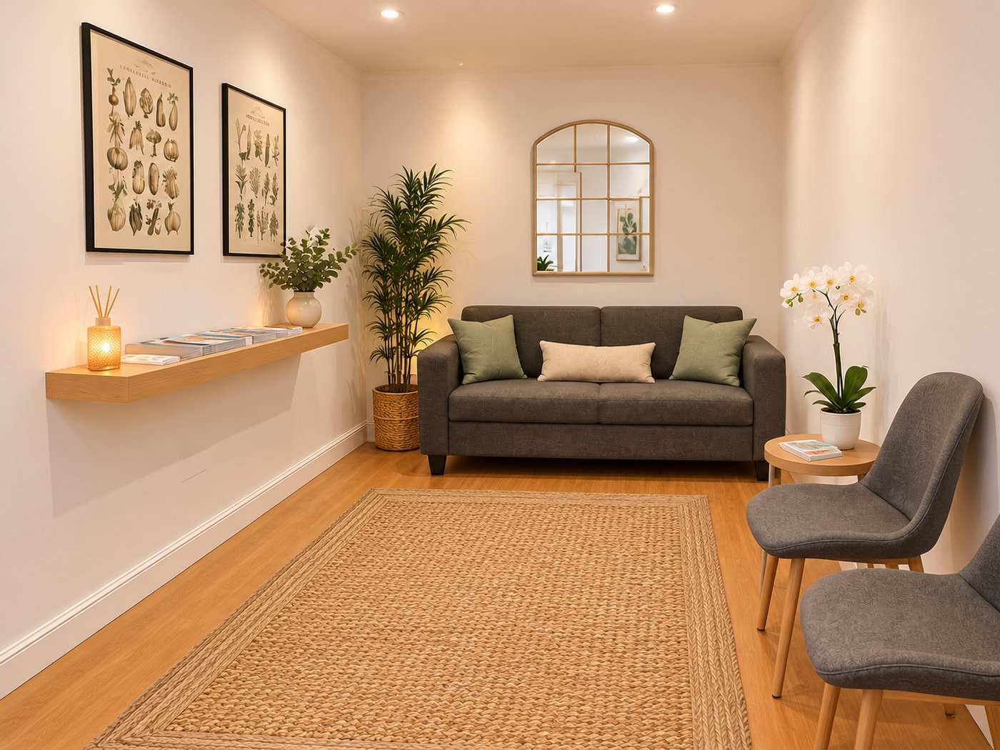
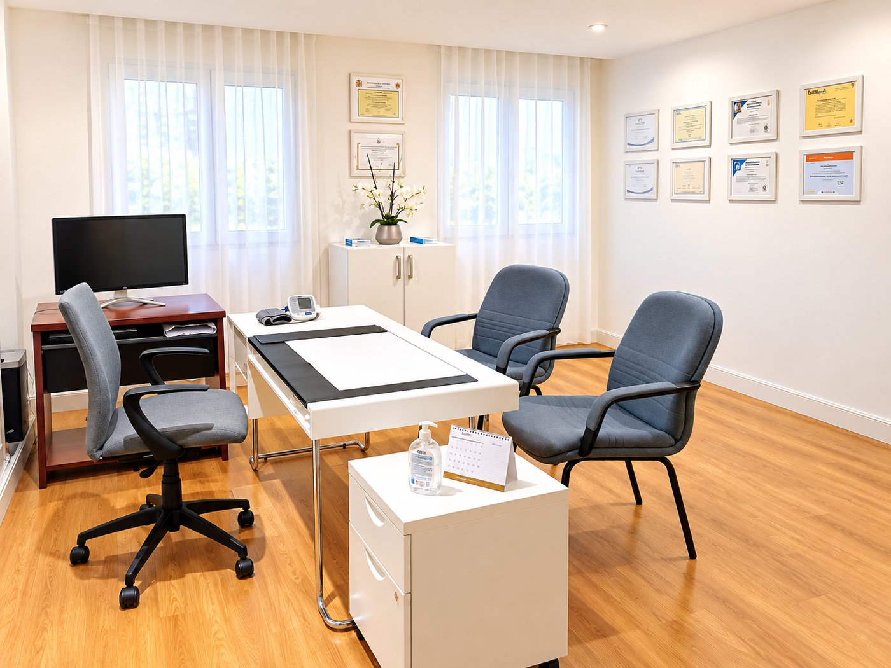
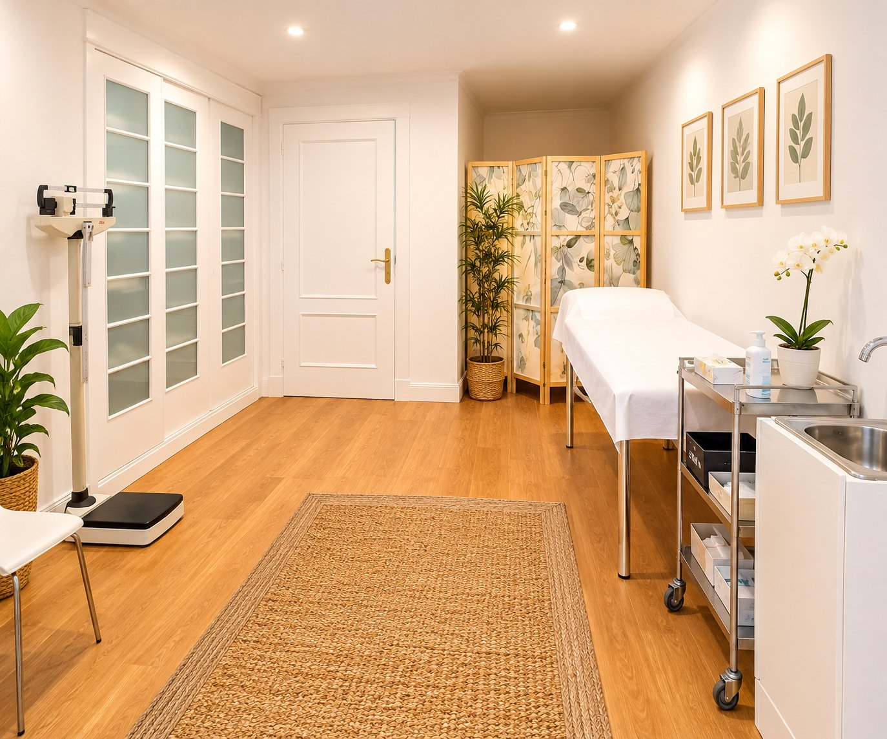

Sobre mí
Hola, soy Miriam Eguía.
«Una adecuada alimentación repercutirá en nuestra calidad de vida y en la mejora de la salud, estemos sanos o enfermos.»
Licenciada en Medicina por la Universidad de Cantabria, Experta en Nutrición y Planificación Dietética por la Universidad Complutense de Madrid. También Especialista en Nutrición Celular Activa por la AFMO y Posgrado en Neuropsicología Clínica por el ISEP de Barcelona.
Desde el inicio de mi carrera me interesó el trato con el paciente, la prevención y la comunicación para mejorar la salud. En la nutrición encontré respuestas a muchos de los problemas que vemos en consulta: hábitos, patología, familia y día a día.
He tratado a cientos de pacientes en mi consulta y en centros especializados, y he colaborado en radio, prensa y televisión. Cada persona es distinta: abrimos historia médica y hacemos una evaluación nutricional completa.
En los medios
Colaboraciones en radio, prensa y televisión.
- Centro registrado Nº 06/2025/04344 · Consejería de Sanidad de Cantabria
- Colegiada en el Colegio Oficial de Médicos de Cantabria
- Director técnico responsable: Dra. Miriam Eguía Llosa
Espacio de consulta
La clínica
Consulta presencial en Santander. Un entorno tranquilo y luminoso, pensado para que te sientas cómodo desde el primer momento.



Calle Juan de la Cosa 15, 1ºD · 39004 Santander · Pedir cita